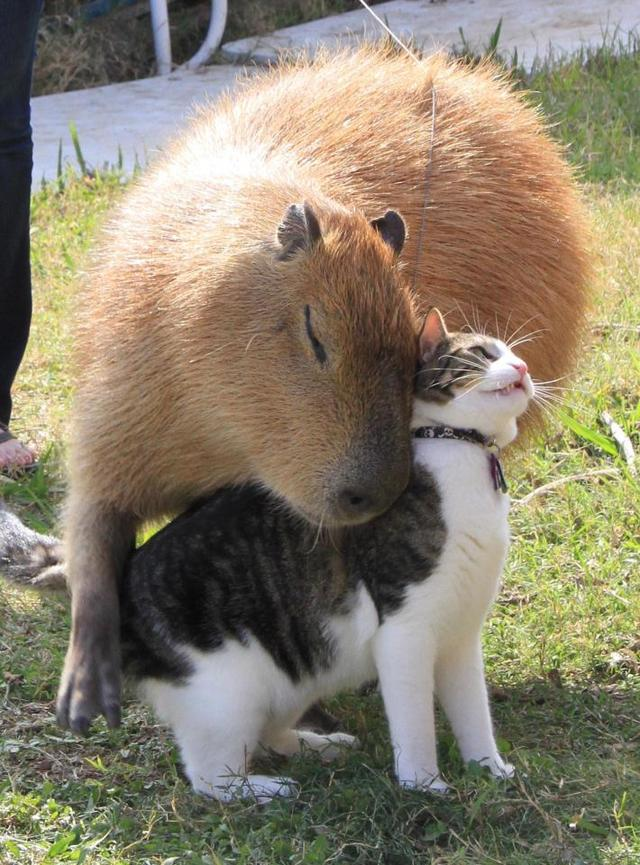
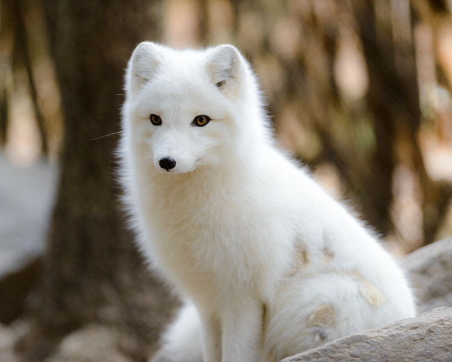
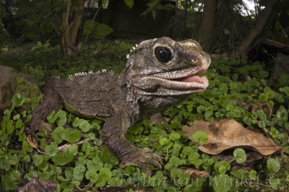
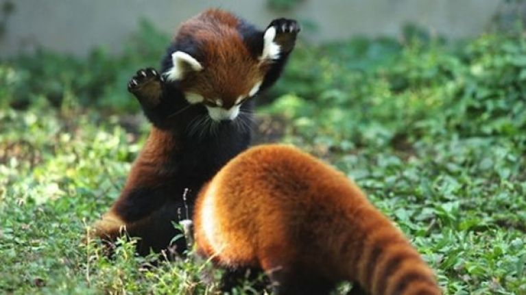

Animals R Us
Meet your new best friend!
Tom and Jerry
Jerry
Jerry hails from the misty jungle of Brazil. He met his best friend, Tom, when wandering the decks of the Carnival cruise ship he stowed away upon. The two animals have been inseparable ever since. Truly the odd animal pairing.
Tom
Tom is a cat. Get it? Tom cat? LOL!
Disclaimer: Tom and Jerry must be adopted together.
Balto
Balto once starred in a movie. He's known for his voice acting on Rescue Rangers. He also performed motion capture for the titular film, Titanic.
Reptar
Reptar hails from the metropolitan sewers of Japan; son of Godzilla. Perputually living in his father's shadow (literally), he seeks a warm and loving family to warm his cold blood (also literally).
Pabu and Ragu
Pabu
From the mountain forests of China, Pabu was illegally deported to California with his younger brother Ragu. After surviving the streets of LA, the two were found living and dumpster diving in Portland, OR.
Ragu
Ragu is the younger brother of Pabu and hardcore freegan. He looks up to Pabu and hopes to follow in his footsteps as scavenger pack leader.
Disclaimer: Pabu and Ragu must be adopted together
Jeepy

Jeepy's history remains shrouded in mystery. Adopt at your own risk.